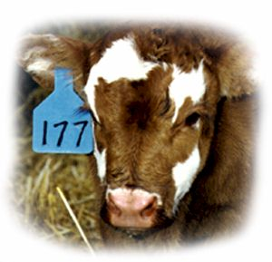
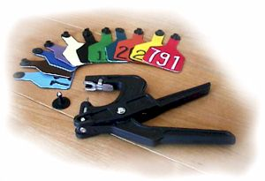
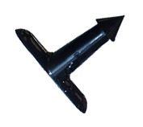

| Ritchey ear tags are the original
engravable
"Color-Layered" I.D. tags. An efficient hand held engraving tool lets you mark
your tags permanently in seconds. Eliminates paint, ink, drying time and faded numbers. Features of Ritchey I.D. Tags: • unsurpassed performance in retention, readability and durability • only I.D. system with Do-It-Yourself or Factory Numbers that are absolutely permanent |
|
|  |
The unique "Color-Layered" Tags are
available in 2 styles and 12 colors (for a chart of the color combinations check out Ritchey Tags Color Chart):
• "Universal" Standard two-piece button system - adapts to most button systems or try the NEW Ritchey "T-Locks", "universal" tag sizes are as follows:
• Large Cow Tags are 5" x 3" • "original" Ritchey one-piece flat or folded arrowhead tags, "original" flat or folded arrowhead tag sizes are as follows:
• Large Cow Tags 5 3/4" x 2 3/4"
Generation II tags are no longer manufactured. Call about in-stock discontinued items. |
|
 |
The Ritchey "T-Lock" is a male stud to be used with Ritchey Universal tags or the Y-TEX cow tags or the ALLFLEX cow tags. The Ritchey "T-Lock" has shown less infection during healing, less snagging and higher retention rate. (United States customers should contact Ritchey directly.) |
Return to Livestock Identification
Nifty Livestock Equipment Ltd.
1999-2005
About Nifty / Feed Equipment / Livestock ID / Handling Equipment / Dealers Page / Contact Us